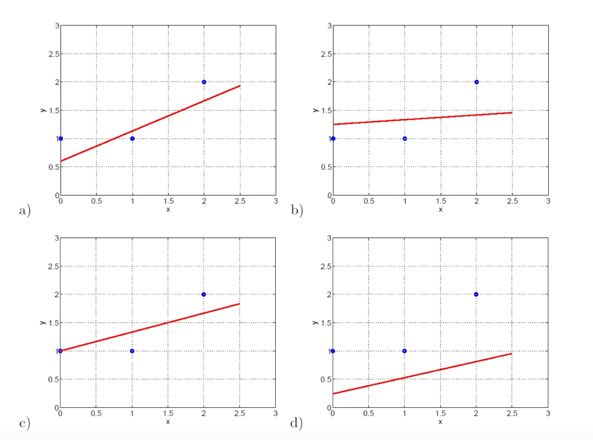
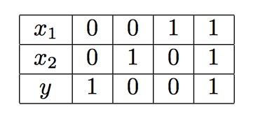
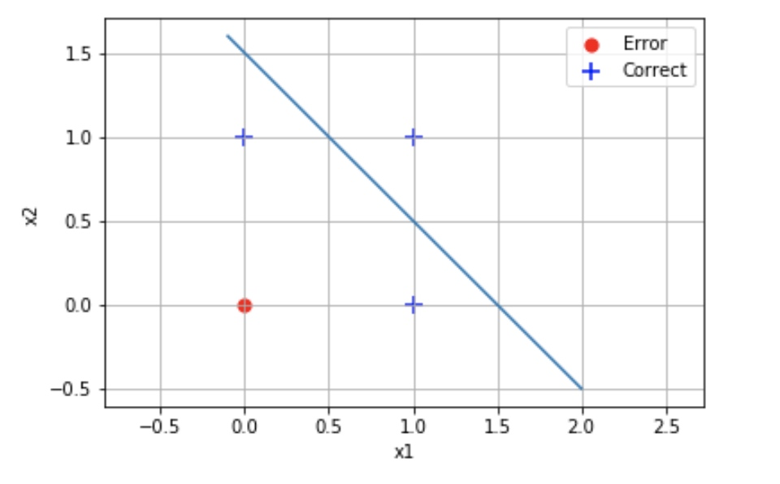
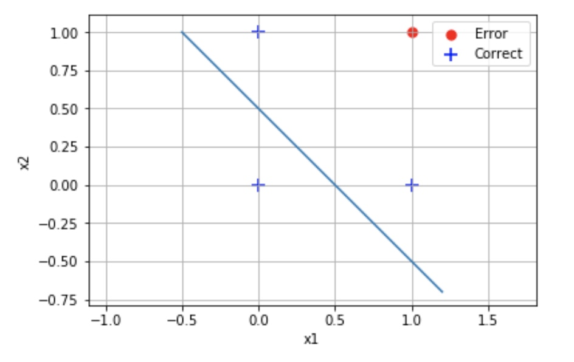
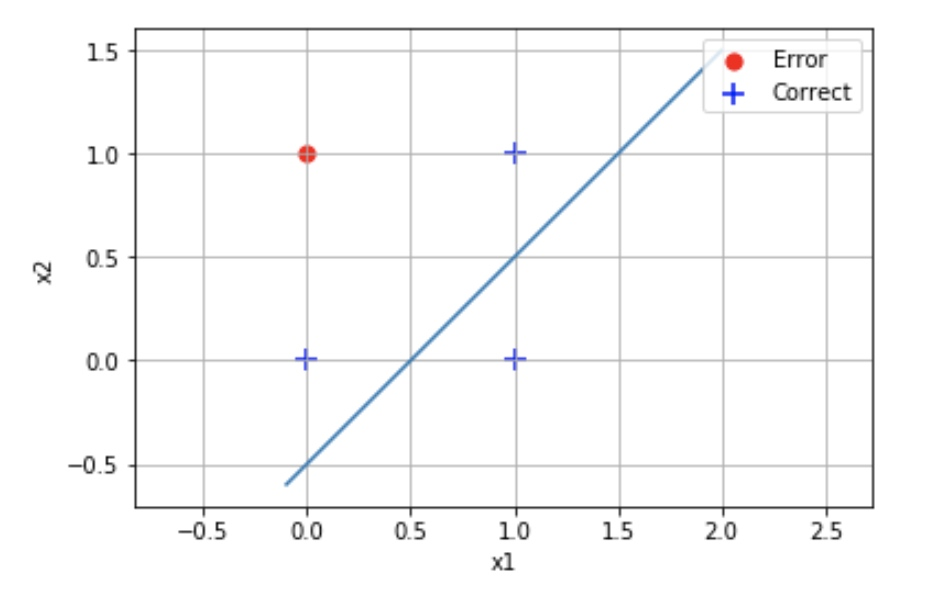
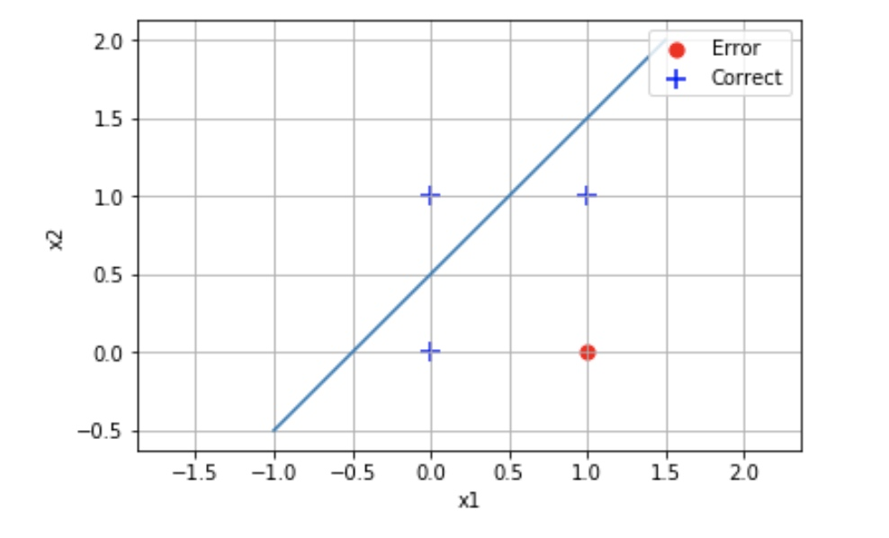
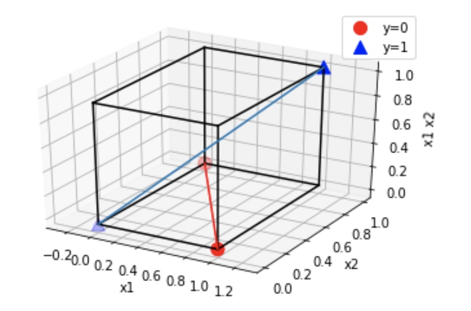
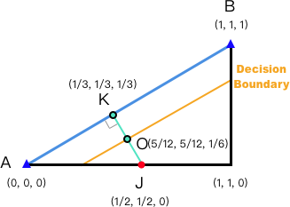
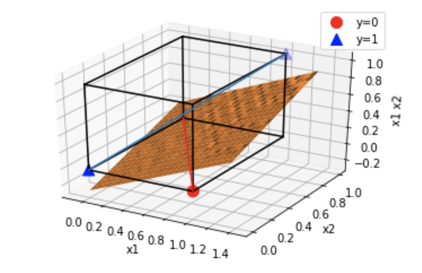
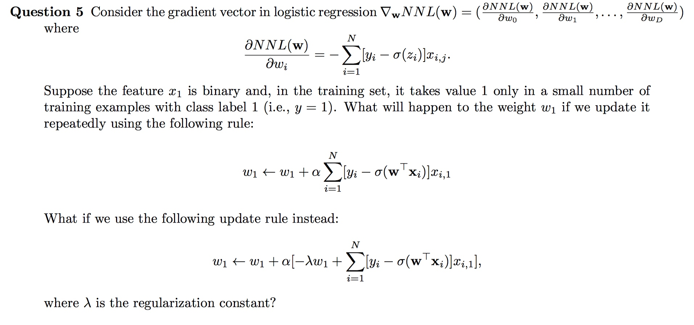

MSBD 5012: Machine Learning
Homework 1
Question 1
Consider carrying out linear regression on the following dataset. Manually compute the ordinary least squares solution.
| Index | 0 | 1 | 2 | 3 | 4 |
|---|---|---|---|---|---|
| x1 | 0 | 0 | 1 | 1 | 1 |
| x2 | 1 | 1 | 1 | 0 | 0 |
| y | 0 | 1 | 2 | 3 | 4 |
Answer:
The ordinary least squares formula is listed as follow:
Since the matrix of X and y is:
Then, we can get the following result:
Thus, the result is:
Question 2
The following figures show linear regression results on a dataset of only three data points (marked blue).

The results were obtained using following regularization schemes:
- $\frac{1}{3}\sum_{i=1}^{3}(y_i-w_0-w_1x_i)^2 + \lambda w_{1}^{2} where \lambda = 1$
- $\frac{1}{3}\sum_{i=1}^{3}(y_i-w_0-w_1x_i)^2 + \lambda w_{1}^{2} where \lambda = 10$
- $\frac{1}{3}\sum_{i=1}^{3}(y_i-w_0-w_1x_i)^2 + \lambda(w_{0}^{2}+w_{1}^{2}) where \lambda = 1$
- $\frac{1}{3}\sum_{i=1}^{3}(y_i-w_0-w_1x_i)^2 + \lambda(w_{0}^{2}+w_{1}^{2}) where \lambda = 10$
Match the regularization schemes with the regress results. Briefly explain your answers.
Answer:
This is my answer in table:
| Regularization Schemes | Regress Results |
|---|---|
| 1 | c) |
| 2 | b) |
| 3 | a) |
| 4 | d) |
Firstly, we can see that the Scheme 3 and Scheme 4 contain the weight $w_0$, resulting in a smaller bias in the y axis. Thus, they should belong to the graphs a) and d).
- After comparing Scheme 3 and Scheme 4 in detail, we can see that Scheme 4 has a higher $\lambda=10$, resulting in a smaller weight of $w_1$ and smaller slope of the line.
- On contrast, Scheme 3 has a smaller $\lambda=1$, resulting in a higher weight of $w_1$ and bigger slope of the line.
- Finally ,we can judge that Scheme 4 match with the regress result of d) while Scheme 3 match with the regress result of a)
Secondly, we can see that the Scheme 1 and Scheme 2 do not contain the weight $w_0$, resulting in a bigger bias in the y axis. Thus, they should belong to the graphs b) and c).
- To compare them in more detail, we can see that Scheme 2 has a higher $\lambda=10$, resulting in a smaller weight of $w_1$ and smaller slope of the line.
- On contrast, Scheme 1 has a smaller $\lambda=1$, resulting in a higher weight of $w_1$ and bigger slope of the line.
- Finally ,we can judge that Scheme 2 match with the regress result of b) while Scheme 3 match with the regress result of c)
Question 3
Considering applying logistic regression to the following dataset:
N 1 2 3 4 x1 0 0 1 1 x2 0 1 0 1 y 0 0 0 1 The target is to learn a model of the form p(y=1|x,w)=$\sigma(w_0+w_1x_1+w_2x_2).$
Suppose $w_0=-2, w_1=1, w_2=1$ initially and $\alpha = 0.1$. Manually run the batch gradient descent algorithm for one iteration. Give the weights and training error after the iteration.
Answer
The update rule with L2 regularization is listed as follow:
$w_j \leftarrow w_j+\alpha \sum_{i = 1}^{N}[\mathbf{y}_i - \sigma(\mathbf{w}^T \mathbf{x}_i )]x_{i,j}$
$\Rightarrow$
$w_0 \leftarrow w_0 + \alpha \times \sum_{i = 1}^{4}[y_i - \sigma(w^T x_i )]x_{i, 0}$
$w_1 \leftarrow w_1 + \alpha \times \sum_{i = 1}^{4}[y_i - \sigma(w^T x_i )]x_{i, 1}$
$w_2 \leftarrow w_2 + \alpha \times \sum_{i = 1}^{4}[y_i - \sigma(w^T x_i )]x_{i, 2}$
$x_{i, 0} = [1, 1, 1, 1], x_{i, 1} = [0, 0, 1, 1], x_{i, 2} = [0, 1, 0, 1]$
$\Rightarrow$
$w_0 \leftarrow -2 + 0.1 \times [(0-\sigma(-2)) \times 1+(0-\sigma(-1)) \times 1+(0-\sigma(-1)) \times 1+(1-\sigma(0)) \times 1]$
$w_1 \leftarrow 1+0.1 \times [(0-\sigma(-2)) \times 0+(0-\sigma(-1)) \times 0+(0-\sigma(-1)) \times 1+(1-\sigma(0)) \times 1]$
$w_2 \leftarrow 1+0.1 \times [(0-\sigma(-2)) \times 0+(0-\sigma(-1)) \times 1+(0-\sigma(-1)) \times 0+(1-\sigma(0)) \times 1]$
$\Rightarrow$
$w_0 \leftarrow -2 + 0.1 \times (-0.157085764762) \approx -2.0157$
$w_1 \leftarrow 1 + 0.1 \times 0.2310585786 \approx 1.023$
$w_2 \leftarrow 1 + 0.1 \times 0.2310585786 \approx 1.023$
$\Rightarrow$ Thus, we get the weights:
If the decision classification rule is:
Then, we can calculate the training error as:
Thus, the training error is 0.
Question 4
Consider applying logistic regression to the following dataset:

- If we use raw feature x1 and x2, the model is
$p(y=1|x,w)=\sigma(w_0+w_1x_1+w_2x_2)$
What is the minimum achievable training error in this case? Give weights that achieve the minimum error.- Next consider using an additional feature $x_1x_2$ in addition to the raw featue x1 and x2. The model now is
$p(y=1|x,w)=\sigma(w_0+w_1x_1+w_2x_2+w_3x_1x_2)$
What is the minimum achievable training error in this case? Give weights that achieve the minimum error.
Answer:
There are 4 kinds of situations in this case. The results are listed as follow:
When we set the $w_0 = -1.5, w_1 = 1, w_2 = 1\Rightarrow x2 = -x1 + 1.5$, we can get the minimum training error $\frac{1}{4}$. The following graph shows the decision boundary $p(y=1|\mathbf{x, w})$, which is a straight line in the feature space. Those data points over the decision boundary are predicted as y=1 while those data points under the decision boundary are classified as y=0. The only 1 red dot represents that the point is wrongly predicted since it has a true value of y=1 but it is predicted as y=0. As for the other 3 blue points represented as ‘+’, they are all classified correctly. Thus, we can get the minimum training error $\frac{1}{4}$.

When we set the $w_0 = -0.5, w_1 = 1, w_2 = 1 \Rightarrow x2 = -x1 + 0.5$, we can also get the minimum training error $\frac{1}{4}$. But as for this decision boundary, the point under the line is predicted as y=1 while the points above the line are predicted as y=0. However, the training error is $\frac{1}{4}$ as well.

- When we set the $w_0 = 0.5, w_1 = -1, w_2 = 1 \Rightarrow x2 = x1 - 0.5$, we can also get the minimum training error $\frac{1}{4}$. But as for this decision boundary, the point under the line is predicted as y=1 while the points above the line are predicted as y=0. However, the training error is $\frac{1}{4}$ as well.

- When we set the $w_0 = -0.5, w_1 = -1, w_2 = 1 \Rightarrow x2 = x1 + 0.5$, we can also get the minimum training error $\frac{1}{4}$. But as for this decision boundary, the point under the line is predicted as y=1 while the points above the line are predicted as y=0. However, the training error is $\frac{1}{4}$ as well.

- Using a conditional feature $x_1 x_2$ just look like a kernel in SVM. The question 1 is not a linearly separable problem because we can not find a line to separate all the points. It looks like a XOR problem. But if we project the point into another dimension, and change it into a 3-Dimensional problem, then we can find a plane as a decision boundary to separate all the data points correctly.
The table is listed as:
| $x_1$ | 0 | 0 | 1 | 1 |
|---|---|---|---|---|
| $x_2$ | 0 | 1 | 0 | 1 |
| $x_1x_2$ | 0 | 0 | 0 | 1 |
| $y$ | 1 | 0 | 0 | 1 |
Then, we can draw a 3D axis according to the value of $x_1, x_2, x_1x_2$ as follow:

We have to find a plane that can separate the red dots and the blue dots. But how can we do that？ Actually we can solve this problem by finding out the plane that can separate the red line and the blue line. We can get the cutaway view of the cube as the following graph:

- The line AB and the red dot of J represent the blue line and red line correspondingly.
- The Orange Line represent the decision boundary that exactly separate the blue line and red line.
- $\vec{KO}=(\frac{1}{6}, \frac{1}{6}, -\frac{1}{3})$ is the normal vector of the decision boundary.
- The dot $O(\frac{5}{12}, \frac{5}{12}, \frac{1}{6})$ is the dot inside the decision boundary.
- After we get the normal vector and one of the inner dot of the Decision Boundary, then we can calculate its function as：
- $2x_1 + 2x_2 - 4x_1x_2 - 1 = 0$
- $W=\begin{bmatrix} -1 \\ 2 \\ 2 \\ -4 \end{bmatrix}$
- The minimum training error is 0.
- This is the 3D view of the result. The orange plane separate the blue line and red line exactly.

Question 5

If the feature $x_1$ is binary and it takes value 1 only in a small number of training examples with class label 1, then we can get the following information:
- $x_1$ is 1 only when the class label is 1
There are very few training examples with class label 1
With the information, we can thereby analyse the following rule:
$w_1 \leftarrow w_1 + \alpha \sum_{i=1}^{N}[y_i - \sigma(\mathbf{w^T x_i})]x_{i, 1}$- It is quite obvious that $x_{i, 1}$ is 0 for most of the time. Thus, $w_1$ cannot be updated and so the convergence will be very slow.
- If $x_{i, 1}$ suddenly get a value 1, then $y_i$ should be 1 which is bigger than $\sigma(\mathbf{w^T x_i})$. Thus, the total value of $[y_i - \sigma(\mathbf{w^T x_i})]x_{i, 1}$ will be positive.
There is no chance the value of $\alpha \sum_{i=1}^{N}[y_i - \sigma(\mathbf{w^T x_i})]x_{i, 1}$ will be negative because when $[y_i - \sigma(\mathbf{w^T x_i})] < 0 $, $y_i$ must be 0 and thus $x_i$ is 0. Thus the total value of $\alpha \sum_{i=1}^{N}[y_i - \sigma(\mathbf{w^T x_i})]x_{i, 1}$ should not smaller than 0.
To draw a conclusion, $w_1$ will increase slowly until it is converged.
If we add the regularization rule to the formula, then the regularization rule will force the weight to be smaller. The formula can be updated as:
- $w_1 \leftarrow (1-\alpha \lambda)w_1 + \alpha \sum_{i=1}^{N}[y_i - \sigma(\mathbf{w^T x_i})]x_{i, 1}$
As $0 < \alpha \lambda < 1$, we can infer that $|(1- \alpha \lambda)w_1| < |w_1|$. Thus, regularizations force the weight to be smaller so as to avoid overfitting.
- $w_1 \leftarrow (1-\alpha \lambda)w_1 + \alpha \sum_{i=1}^{N}[y_i - \sigma(\mathbf{w^T x_i})]x_{i, 1}$